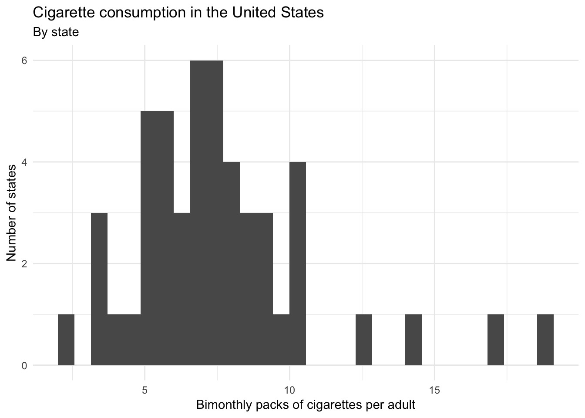

library(tidyverse)
library(broom)
library(sf)
library(albersusa)
options(digits = 3)
set.seed(1234)
theme_set(theme_minimal())\[\newcommand{\E}{\mathrm{E}} \newcommand{\Var}{\mathrm{Var}} \newcommand{\Cov}{\mathrm{Cov}} \newcommand{\se}{\text{se}} \newcommand{\Lagr}{\mathcal{L}} \newcommand{\lagr}{\mathcal{l}}\]
Consider cigarette consumption in the United States. Here we have a dataset of state-level statistics in the United States from 2008.
states <- haven::read_dta("data/states.dta")One column cigarettes reports the number of packs of cigarettes purchased bimonthly per adult in each of the 50 US states.
ggplot(states, aes(cigarettes)) +
geom_histogram() +
labs(title = "Cigarette consumption in the United States",
subtitle = "By state",
x = "Bimonthly packs of cigarettes per adult",
y = "Number of states")## `stat_bin()` using `bins = 30`. Pick better value with `binwidth`.
Let’s say we want to explain cigarette consumption. What factors or independent variables do we think may have an influence on cigarette consumption? One possibility is a cigarette tax.
ggplot(states, aes(cig_tax)) +
geom_histogram() +
scale_x_continuous(labels = scales::dollar) +
labs(title = "Cigarette taxes in the United States",
x = "Cigarette tax (per pack)",
y = "Number of states")## `stat_bin()` using `bins = 30`. Pick better value with `binwidth`.ggplot(states, aes(cig_tax, cigarettes)) +
geom_point() +
geom_smooth(method = "lm") +
scale_x_continuous(labels = scales::dollar) +
labs(title = "Cigarette consumption in the United States",
x = "Cigarette tax (per pack)",
y = "Bimonthly packs of cigarettes per adult")cig_tax <- lm(cigarettes ~ cig_tax, data = states)
summary(cig_tax)##
## Call:
## lm(formula = cigarettes ~ cig_tax, data = states)
##
## Residuals:
## Min 1Q Median 3Q Max
## -4.739 -2.095 -0.211 0.986 9.857
##
## Coefficients:
## Estimate Std. Error t value Pr(>|t|)
## (Intercept) 9.681 0.812 11.93 5.8e-16 ***
## cig_tax -1.960 0.649 -3.02 0.004 **
## ---
## Signif. codes: 0 '***' 0.001 '**' 0.01 '*' 0.05 '.' 0.1 ' ' 1
##
## Residual standard error: 2.94 on 48 degrees of freedom
## Multiple R-squared: 0.16, Adjusted R-squared: 0.142
## F-statistic: 9.13 on 1 and 48 DF, p-value: 0.00403Now add a second hypothesis to the model:
# get simple features and join with states
us_sf <- usa_sf("laea") %>%
left_join(states, by = c("name" = "state")) %>%
filter(name != "District of Columbia")## Warning: Column `name`/`state` joining factor and character vector,
## coercing into character vector## Warning: Column `name`/`state` has different attributes on LHS and RHS of
## joinus_sf %>%
mutate(cigarettes = cut_number(cigarettes, n = 6)) %>%
ggplot() +
geom_sf(aes(fill = cigarettes)) +
scale_fill_brewer() +
labs(title = "Cigarette consumption in the United States",
subtitle = "Bimonthly packs of cigarettes per adult",
fill = NULL)south <- lm(cigarettes ~ cig_tax + south, data = states)
summary(south)##
## Call:
## lm(formula = cigarettes ~ cig_tax + south, data = states)
##
## Residuals:
## Min 1Q Median 3Q Max
## -4.407 -1.689 -0.389 0.912 8.839
##
## Coefficients:
## Estimate Std. Error t value Pr(>|t|)
## (Intercept) 7.643 1.065 7.17 4.4e-09 ***
## cig_tax -0.876 0.726 -1.21 0.2338
## south 2.730 0.998 2.74 0.0087 **
## ---
## Signif. codes: 0 '***' 0.001 '**' 0.01 '*' 0.05 '.' 0.1 ' ' 1
##
## Residual standard error: 2.76 on 47 degrees of freedom
## Multiple R-squared: 0.275, Adjusted R-squared: 0.244
## F-statistic: 8.92 on 2 and 47 DF, p-value: 0.000519states %>%
mutate(south = factor(south, levels = 1:0, labels = c("Southern", "Non-Southern"))) %>%
ggplot(aes(cig_tax, cigarettes, color = south)) +
geom_point() +
geom_smooth(method = "lm", se = FALSE, fullrange = TRUE) +
scale_x_continuous(labels = scales::dollar) +
scale_color_brewer(type = "qual") +
labs(title = "Cigarette consumption in the United States",
x = "Cigarette tax (per pack)",
y = "Bimonthly packs of cigarettes per adult",
color = NULL) +
theme(legend.position = "bottom")To estimate linear models in R, we use the lm() function:
south <- lm(cigarettes ~ cig_tax + south, data = states)
summary(south)##
## Call:
## lm(formula = cigarettes ~ cig_tax + south, data = states)
##
## Residuals:
## Min 1Q Median 3Q Max
## -4.407 -1.689 -0.389 0.912 8.839
##
## Coefficients:
## Estimate Std. Error t value Pr(>|t|)
## (Intercept) 7.643 1.065 7.17 4.4e-09 ***
## cig_tax -0.876 0.726 -1.21 0.2338
## south 2.730 0.998 2.74 0.0087 **
## ---
## Signif. codes: 0 '***' 0.001 '**' 0.01 '*' 0.05 '.' 0.1 ' ' 1
##
## Residual standard error: 2.76 on 47 degrees of freedom
## Multiple R-squared: 0.275, Adjusted R-squared: 0.244
## F-statistic: 8.92 on 2 and 47 DF, p-value: 0.000519The lm() function takes two parameters. The first is a formula specifying the equation to be estimated (lm() translates y ~ x into \(y = \beta_0 + \beta_1 * x\)). The second is of course the data frame containing the variables.
Note that we have now begun to leave the tidyverse universe. lm() is part of the base R program, and the result of lm() is decidedly not tidy.
str(south)## List of 12
## $ coefficients : Named num [1:3] 7.643 -0.876 2.73
## ..- attr(*, "names")= chr [1:3] "(Intercept)" "cig_tax" "south"
## $ residuals : Named num [1:50] 0.569 8.839 -1.898 2.529 -0.998 ...
## ..- attr(*, "label")= chr "Packs bimonthly per adult pop"
## ..- attr(*, "format.stata")= chr "%10.0g"
## ..- attr(*, "names")= chr [1:50] "1" "2" "3" "4" ...
## $ effects : Named num [1:50] -53.57 -8.88 -7.55 1.97 -2.82 ...
## ..- attr(*, "label")= chr "Packs bimonthly per adult pop"
## ..- attr(*, "format.stata")= chr "%10.0g"
## ..- attr(*, "names")= chr [1:50] "(Intercept)" "cig_tax" "south" "" ...
## $ rank : int 3
## $ fitted.values: Named num [1:50] 9.47 10.11 10.06 9.89 7.26 ...
## ..- attr(*, "label")= chr "Packs bimonthly per adult pop"
## ..- attr(*, "format.stata")= chr "%10.0g"
## ..- attr(*, "names")= chr [1:50] "1" "2" "3" "4" ...
## $ assign : int [1:3] 0 1 2
## $ qr :List of 5
## ..$ qr : num [1:50, 1:3] -7.071 0.141 0.141 0.141 0.141 ...
## .. ..- attr(*, "dimnames")=List of 2
## .. .. ..$ : chr [1:50] "1" "2" "3" "4" ...
## .. .. ..$ : chr [1:3] "(Intercept)" "cig_tax" "south"
## .. ..- attr(*, "assign")= int [1:3] 0 1 2
## ..$ qraux: num [1:3] 1.14 1.17 1.1
## ..$ pivot: int [1:3] 1 2 3
## ..$ tol : num 1e-07
## ..$ rank : int 3
## ..- attr(*, "class")= chr "qr"
## $ df.residual : int 47
## $ xlevels : Named list()
## $ call : language lm(formula = cigarettes ~ cig_tax + south, data = states)
## $ terms :Classes 'terms', 'formula' language cigarettes ~ cig_tax + south
## .. ..- attr(*, "variables")= language list(cigarettes, cig_tax, south)
## .. ..- attr(*, "factors")= int [1:3, 1:2] 0 1 0 0 0 1
## .. .. ..- attr(*, "dimnames")=List of 2
## .. .. .. ..$ : chr [1:3] "cigarettes" "cig_tax" "south"
## .. .. .. ..$ : chr [1:2] "cig_tax" "south"
## .. ..- attr(*, "term.labels")= chr [1:2] "cig_tax" "south"
## .. ..- attr(*, "order")= int [1:2] 1 1
## .. ..- attr(*, "intercept")= int 1
## .. ..- attr(*, "response")= int 1
## .. ..- attr(*, ".Environment")=<environment: R_GlobalEnv>
## .. ..- attr(*, "predvars")= language list(cigarettes, cig_tax, south)
## .. ..- attr(*, "dataClasses")= Named chr [1:3] "numeric" "numeric" "numeric"
## .. .. ..- attr(*, "names")= chr [1:3] "cigarettes" "cig_tax" "south"
## $ model :'data.frame': 50 obs. of 3 variables:
## ..$ cigarettes: num [1:50] 10.04 18.95 8.16 12.42 6.26 ...
## .. ..- attr(*, "label")= chr "Packs bimonthly per adult pop"
## .. ..- attr(*, "format.stata")= chr "%10.0g"
## ..$ cig_tax : num [1:50] 1.03 0.3 0.36 0.55 0.44 2 0.17 0.695 0.18 0.91 ...
## .. ..- attr(*, "label")= chr "Cigarette tax per pack"
## .. ..- attr(*, "format.stata")= chr "%10.0g"
## ..$ south : 'labelled' num [1:50] 1 1 1 1 0 0 0 0 1 0 ...
## .. ..- attr(*, "labels")= Named num [1:2] 0 1
## .. .. ..- attr(*, "names")= chr [1:2] "Nonsouth" "South"
## .. ..- attr(*, "label")= chr "Southern state?"
## .. ..- attr(*, "format.stata")= chr "%8.0g"
## ..- attr(*, "terms")=Classes 'terms', 'formula' language cigarettes ~ cig_tax + south
## .. .. ..- attr(*, "variables")= language list(cigarettes, cig_tax, south)
## .. .. ..- attr(*, "factors")= int [1:3, 1:2] 0 1 0 0 0 1
## .. .. .. ..- attr(*, "dimnames")=List of 2
## .. .. .. .. ..$ : chr [1:3] "cigarettes" "cig_tax" "south"
## .. .. .. .. ..$ : chr [1:2] "cig_tax" "south"
## .. .. ..- attr(*, "term.labels")= chr [1:2] "cig_tax" "south"
## .. .. ..- attr(*, "order")= int [1:2] 1 1
## .. .. ..- attr(*, "intercept")= int 1
## .. .. ..- attr(*, "response")= int 1
## .. .. ..- attr(*, ".Environment")=<environment: R_GlobalEnv>
## .. .. ..- attr(*, "predvars")= language list(cigarettes, cig_tax, south)
## .. .. ..- attr(*, "dataClasses")= Named chr [1:3] "numeric" "numeric" "numeric"
## .. .. .. ..- attr(*, "names")= chr [1:3] "cigarettes" "cig_tax" "south"
## - attr(*, "class")= chr "lm"The result is stored in a complex list that contains a lot of important information, some of which you may recognize but most of it you do not. In order to extract model statistics and use them in a tidy manner, we can use a set of functions from the broom package. For these functions, the input is always the model object itself, not the original data frame.
tidy()tidy() constructs a data frame that summarizes the model’s statistical findings. This includes coefficients and p-values for each parameter in a regression model. Note that depending on the statistical learning method employed, the statistics stored in the columns may vary.
tidy(south)## # A tibble: 3 x 5
## term estimate std.error statistic p.value
## <chr> <dbl> <dbl> <dbl> <dbl>
## 1 (Intercept) 7.64 1.07 7.17 0.00000000445
## 2 cig_tax -0.876 0.726 -1.21 0.234
## 3 south 2.73 0.998 2.74 0.00874tidy(south) %>%
str()## Classes 'tbl_df', 'tbl' and 'data.frame': 3 obs. of 5 variables:
## $ term : chr "(Intercept)" "cig_tax" "south"
## $ estimate : num 7.643 -0.876 2.73
## $ std.error: num 1.065 0.726 0.998
## $ statistic: num 7.17 -1.21 2.74
## $ p.value : num 4.45e-09 2.34e-01 8.74e-03Notice that the structure of the resulting object is a tidy data frame. Every row contains a single parameter, every column contains a single statistic, and every cell contains exactly one value.
augment()augment() adds columns to the original data that was modeled. This could include predictions, residuals, and other observation-level statistics.
augment(south) %>%
as_tibble()## # A tibble: 50 x 10
## cigarettes cig_tax south .fitted .se.fit .resid .hat .sigma .cooksd
## * <dbl> <dbl> <dbl> <dbl> <dbl> <dbl> <dbl> <dbl> <dbl>
## 1 10.0 1.03 1 9.47 0.768 0.569 0.0775 2.79 1.29e-3
## 2 19.0 0.3 1 10.1 0.716 8.84 0.0674 2.44 2.65e-1
## 3 8.16 0.36 1 10.1 0.706 -1.90 0.0654 2.77 1.18e-2
## 4 12.4 0.55 1 9.89 0.690 2.53 0.0625 2.76 1.99e-2
## 5 6.26 0.44 0 7.26 0.792 -0.998 0.0824 2.78 4.27e-3
## 6 6.22 2 0 5.89 0.687 0.329 0.0620 2.79 3.35e-4
## 7 9.68 0.17 0 7.49 0.956 2.19 0.120 2.77 3.25e-2
## 8 3.58 0.695 0 7.03 0.653 -3.45 0.0560 2.74 3.28e-2
## 9 9.35 0.18 1 10.2 0.744 -0.866 0.0728 2.79 2.78e-3
## 10 4.92 0.91 0 6.85 0.557 -1.93 0.0407 2.77 7.19e-3
## # ... with 40 more rows, and 1 more variable: .std.resid <dbl>augment() will return statistics to the original data used to estimate the model, however if you supply a data frame under the newdata argument, it will return a more limited set of statistics.
glance()glance() constructs a concise one-row summary of the model. This typically contains values such as \(R^2\), adjusted \(R^2\), and residual standard error that are computed once for the entire model.
glance(south)## # A tibble: 1 x 11
## r.squared adj.r.squared sigma statistic p.value df logLik AIC BIC
## * <dbl> <dbl> <dbl> <dbl> <dbl> <int> <dbl> <dbl> <dbl>
## 1 0.275 0.244 2.76 8.92 5.19e-4 3 -120. 248. 256.
## # ... with 2 more variables: deviance <dbl>, df.residual <int>While broom may not work with every model in R, it is compatible with a wide range of common statistical models. A full list of models with which broom is compatible can be found on the GitHub page for the package.
devtools::session_info()## Session info -------------------------------------------------------------## setting value
## version R version 3.5.1 (2018-07-02)
## system x86_64, darwin15.6.0
## ui X11
## language (EN)
## collate en_US.UTF-8
## tz America/Chicago
## date 2018-12-04## Packages -----------------------------------------------------------------## package * version date source
## albersusa * 0.3.1 2018-12-04 Github (hrbrmstr/albersusa@cf69f03)
## assertthat 0.2.0 2017-04-11 CRAN (R 3.5.0)
## backports 1.1.2 2017-12-13 CRAN (R 3.5.0)
## base * 3.5.1 2018-07-05 local
## bindr 0.1.1 2018-03-13 CRAN (R 3.5.0)
## bindrcpp * 0.2.2 2018-03-29 CRAN (R 3.5.0)
## broom * 0.5.0 2018-07-17 CRAN (R 3.5.0)
## cellranger 1.1.0 2016-07-27 CRAN (R 3.5.0)
## class 7.3-14 2015-08-30 CRAN (R 3.5.1)
## classInt 0.2-3 2018-04-16 CRAN (R 3.5.0)
## cli 1.0.0 2017-11-05 CRAN (R 3.5.0)
## codetools 0.2-15 2016-10-05 CRAN (R 3.5.1)
## colorspace 1.3-2 2016-12-14 CRAN (R 3.5.0)
## compiler 3.5.1 2018-07-05 local
## crayon 1.3.4 2017-09-16 CRAN (R 3.5.0)
## datasets * 3.5.1 2018-07-05 local
## DBI 1.0.0 2018-05-02 CRAN (R 3.5.0)
## devtools 1.13.6 2018-06-27 CRAN (R 3.5.0)
## digest 0.6.18 2018-10-10 cran (@0.6.18)
## dplyr * 0.7.8 2018-11-10 cran (@0.7.8)
## e1071 1.7-0 2018-07-28 CRAN (R 3.5.0)
## evaluate 0.11 2018-07-17 CRAN (R 3.5.0)
## forcats * 0.3.0 2018-02-19 CRAN (R 3.5.0)
## foreign 0.8-71 2018-07-20 CRAN (R 3.5.0)
## ggplot2 * 3.1.0 2018-10-25 cran (@3.1.0)
## glue 1.3.0 2018-07-17 CRAN (R 3.5.0)
## graphics * 3.5.1 2018-07-05 local
## grDevices * 3.5.1 2018-07-05 local
## grid 3.5.1 2018-07-05 local
## gtable 0.2.0 2016-02-26 CRAN (R 3.5.0)
## haven 1.1.2 2018-06-27 CRAN (R 3.5.0)
## hms 0.4.2 2018-03-10 CRAN (R 3.5.0)
## htmltools 0.3.6 2017-04-28 CRAN (R 3.5.0)
## httr 1.3.1 2017-08-20 CRAN (R 3.5.0)
## jsonlite 1.5 2017-06-01 CRAN (R 3.5.0)
## knitr 1.20 2018-02-20 CRAN (R 3.5.0)
## labeling 0.3 2014-08-23 CRAN (R 3.5.0)
## lattice 0.20-35 2017-03-25 CRAN (R 3.5.1)
## lazyeval 0.2.1 2017-10-29 CRAN (R 3.5.0)
## lubridate 1.7.4 2018-04-11 CRAN (R 3.5.0)
## magrittr 1.5 2014-11-22 CRAN (R 3.5.0)
## maptools 0.9-4 2018-09-19 cran (@0.9-4)
## memoise 1.1.0 2017-04-21 CRAN (R 3.5.0)
## methods * 3.5.1 2018-07-05 local
## modelr 0.1.2 2018-05-11 CRAN (R 3.5.0)
## munsell 0.5.0 2018-06-12 CRAN (R 3.5.0)
## nlme 3.1-137 2018-04-07 CRAN (R 3.5.1)
## pillar 1.3.0 2018-07-14 CRAN (R 3.5.0)
## pkgconfig 2.0.2 2018-08-16 CRAN (R 3.5.1)
## plyr 1.8.4 2016-06-08 CRAN (R 3.5.0)
## purrr * 0.2.5 2018-05-29 CRAN (R 3.5.0)
## R6 2.3.0 2018-10-04 cran (@2.3.0)
## RColorBrewer 1.1-2 2014-12-07 CRAN (R 3.5.0)
## Rcpp 1.0.0 2018-11-07 cran (@1.0.0)
## readr * 1.1.1 2017-05-16 CRAN (R 3.5.0)
## readxl 1.1.0 2018-04-20 CRAN (R 3.5.0)
## rgdal 1.3-6 2018-10-16 cran (@1.3-6)
## rgeos 0.4-2 2018-11-08 cran (@0.4-2)
## rlang 0.3.0.1 2018-10-25 CRAN (R 3.5.0)
## rmarkdown 1.10 2018-06-11 CRAN (R 3.5.0)
## rprojroot 1.3-2 2018-01-03 CRAN (R 3.5.0)
## rstudioapi 0.7 2017-09-07 CRAN (R 3.5.0)
## rvest 0.3.2 2016-06-17 CRAN (R 3.5.0)
## scales 1.0.0 2018-08-09 CRAN (R 3.5.0)
## sf * 0.7-1 2018-10-24 CRAN (R 3.5.0)
## sp 1.3-1 2018-06-05 CRAN (R 3.5.0)
## spData 0.2.9.3 2018-08-01 CRAN (R 3.5.0)
## stats * 3.5.1 2018-07-05 local
## stringi 1.2.4 2018-07-20 CRAN (R 3.5.0)
## stringr * 1.3.1 2018-05-10 CRAN (R 3.5.0)
## tibble * 1.4.2 2018-01-22 CRAN (R 3.5.0)
## tidyr * 0.8.1 2018-05-18 CRAN (R 3.5.0)
## tidyselect 0.2.5 2018-10-11 cran (@0.2.5)
## tidyverse * 1.2.1 2017-11-14 CRAN (R 3.5.0)
## tools 3.5.1 2018-07-05 local
## units 0.6-0 2018-06-09 CRAN (R 3.5.0)
## utils * 3.5.1 2018-07-05 local
## withr 2.1.2 2018-03-15 CRAN (R 3.5.0)
## xml2 1.2.0 2018-01-24 CRAN (R 3.5.0)
## yaml 2.2.0 2018-07-25 CRAN (R 3.5.0)This work is licensed under the CC BY-NC 4.0 Creative Commons License.